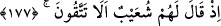

190. Doğrusu bunda büyük bir ders vardır; ama çokları iman etmezler.
191. Şüphesiz Rabbin, işte O, mutlak galip ve engin merhamet sahibidir.
“Eyke halkı da peygamberleri” yâni Şuayb (a.s.)’ı ve ondan öncekileri “yalancılıkla
suçladı.”
“
” sedir, erak ve benzeri yumuşak ağaçların bulunduğu bataklık bir yerdir. Burası
Medyen yakınlarında bir topluluğun yaşadığı bataklık bir yerdir.
Allah Teâlâ Şuayb (a.s.)’ı Medyen’e gönderdikten sonra onlara peygamber olarak
göndermiştir. Ancak o, neseben Medyenlilerin kardeşi olduğu için “Medyen’e de
kardeşleri Şuayb’i (gönderdik)” (el-A’râf, 7/85) buyurdu. Aslen Eykeli olmadığı için
ise şöyle buyurdu:
177. Şuayb onlara şöyle demişti: (Allah’a karşı gelmekten) sakınmaz mısınız?
“Şuayb onlara şöyle demişti:” Burada “kardeşleri Şuayb...” buyrulmamıştır. O,
Şuayb b. Tüveyb b. Medyen b. İbrâhim’dir. Ya da İbn Meykîl b. Yeşcür/Yeşcer b.
Medyen b. İbrâhim’dir. Meykîk’in annesi Lût (a.s.)’ın kızıdır.
“(Allah’a karşı gelmekten) sakınmaz mısınız?” Rabbinizin azâbından korkmuyor
musunuz ki O’na şirk koşuyorsunuz?
178. Bilin ki, ben size gönderilmiş güvenilir bir elçiyim.
“Bilin ki, ben size gönderilmiş” aranızda, hem de risâlet konusunda “güvenilir bir
elçiyim.” Sizin durumunuzun düzelmenizden başka bir şey istemiyorum.
179. Artık Allah’a karşı gelmekten sakının ve bana itaat edin.
“Artık Allah’a karşı gelmekten sakının ve” size emretmekte olduğum hususlarda
“bana itâat edin.” Çünkü benim emrim, Allah’tan alınan emirlerdir. Bana itâat
hakikatte Allah’a itâattir.